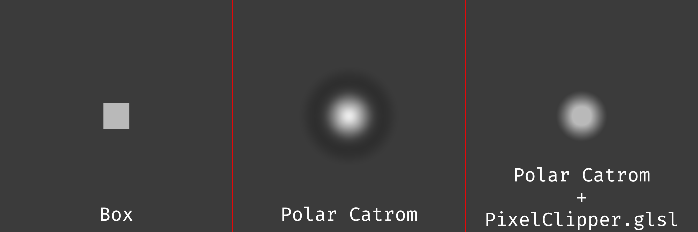

This page is meant to be treated as a follow-up to this scaler comparison done with ImageMagick. I'm only going to talk about niche topics here, so just refer to that other page if you only want to read about scalers.
The mpv community has written several meme shaders you can use to upsample video in real time, and the rationale is that they can potentially achieve higher quality than the built-in methods. I still do not have a good way of
automating mpv tests and therefore I'll have to stick to a single test image, which is going to be aoko.png:
The small number of samples under test makes this very unscientific, but it is what it is.
The following shaders were "benchmarked":
I've also added a few built-in filters to the mix just to have some reference points.The test image is downsampled with:
magick convert aoko.png -colorspace rgb -filter box -resize 50% -colorspace srgb downscaled.png
It is then converted to grayscale with:
magick convert downscaled.png -colorspace gray downscaled.png
The original image is also converted to grayscale using the same command to create the reference:
magick convert aoko.png -colorspace gray reference.png
We need to convert them to grayscale because some of these shaders do not have RGB support.
The images were then upsampled back with:
mpv --no-config --vo=gpu-next --no-hidpi-window-scale --window-scale=2.0 --pause=yes --screenshot-format=png --sigmoid-upscaling --deband=no --dither-depth=no --screenshot-high-bit-depth=no --glsl-shader="path/to/meme/shader" downscaled.png
| Shader/Filter | MAE | PSNR | SSIM | MS-SSIM | MAE (N) | PSNR (N) | SSIM (N) | MS-SSIM (N) | Mean | ||
| ArtCNN_C4F32 | 7.39E-03 | 33.1485 | 0.9823 | 0.9984 | 1.0000 | 1.0000 | 1.0000 | 1.0000 | 1.0000 | ||
| ArtCNN_C4F16 | 8.17E-03 | 32.2510 | 0.9796 | 0.9982 | 0.9406 | 0.9004 | 0.9571 | 0.9883 | 0.9466 | ||
| ArtCNN_C4F8 | 9.57E-03 | 31.0597 | 0.9737 | 0.9978 | 0.8328 | 0.7682 | 0.8638 | 0.9660 | 0.8577 | ||
| FSRCNNX_x2_16-0-4-1 | 1.13E-02 | 29.6602 | 0.9703 | 0.9957 | 0.7030 | 0.6128 | 0.8086 | 0.8602 | 0.7462 | ||
| FSRCNNX_x2_8-0-4-1 | 1.19E-02 | 29.2788 | 0.9650 | 0.9954 | 0.6513 | 0.5705 | 0.7256 | 0.8448 | 0.6980 | ||
| ravu-lite-ar-r4 | 1.23E-02 | 28.7622 | 0.9609 | 0.9949 | 0.6242 | 0.5132 | 0.6605 | 0.8198 | 0.6544 | ||
| ravu-zoom-ar-r3 | 1.23E-02 | 28.5501 | 0.9617 | 0.9948 | 0.6259 | 0.4896 | 0.6732 | 0.8134 | 0.6505 | ||
| ravu-lite-ar-r3 | 1.25E-02 | 28.6412 | 0.9596 | 0.9949 | 0.6099 | 0.4997 | 0.6403 | 0.8204 | 0.6426 | ||
| ravu-lite-ar-r2 | 1.25E-02 | 28.3158 | 0.9594 | 0.9950 | 0.6095 | 0.4636 | 0.6363 | 0.8272 | 0.6341 | ||
| ravu-zoom-ar-r2 | 1.25E-02 | 28.3345 | 0.9597 | 0.9946 | 0.6088 | 0.4657 | 0.6413 | 0.8039 | 0.6299 | ||
| polar_lanczos4sharpest | 1.46E-02 | 27.5899 | 0.9493 | 0.9936 | 0.4459 | 0.3830 | 0.4768 | 0.7539 | 0.5149 | ||
| FSR | 1.52E-02 | 27.5630 | 0.9496 | 0.9941 | 0.3980 | 0.3801 | 0.4814 | 0.7792 | 0.5097 | ||
| lanczos | 1.58E-02 | 27.5135 | 0.9440 | 0.9940 | 0.3541 | 0.3746 | 0.3920 | 0.7758 | 0.4741 | ||
| polar_lanczossharp | 1.66E-02 | 27.2062 | 0.9395 | 0.9929 | 0.2938 | 0.3404 | 0.3213 | 0.7166 | 0.4180 | ||
| bilinear | 2.04E-02 | 25.3101 | 0.9192 | 0.9864 | 0.0000 | 0.1300 | 0.0000 | 0.3878 | 0.1295 | ||
| nnedi3-nns256-win8x4 | 2.00E-02 | 24.1760 | 0.9230 | 0.9789 | 0.0299 | 0.0041 | 0.0594 | 0.0023 | 0.0239 | ||
| nnedi3-nns128-win8x4 | 2.01E-02 | 24.1781 | 0.9226 | 0.9790 | 0.0235 | 0.0044 | 0.0542 | 0.0062 | 0.0221 | ||
| nnedi3-nns64-win8x4 | 2.03E-02 | 24.1549 | 0.9219 | 0.9789 | 0.0114 | 0.0018 | 0.0417 | 0.0000 | 0.0137 | ||
| nnedi3-nns32-win8x4 | 2.04E-02 | 24.1389 | 0.9212 | 0.9789 | 0.0034 | 0.0000 | 0.0307 | 0.0019 | 0.0090 |
As we can see in the table above, ArtCNN is easily above the other options. Part of it comes from the fact that my degradation step here (downscaling with box in linear light) matches what was done to its training dataset perfectly (which was also downscaled with box in linear light), but I could argue that part of it comes from the architectural choices and the L1/MAE loss function as well. I could even say that the bigger C4F32 model is on a class of its own, but using something this big for video is probably wasteful as you'll rarely have a detailed enough stream to need all this reconstruction capacity.
It's nice to see that bjin came back from the dead with gold. The new ravu variants perform much better than their previous iterations and they're also free of the half-pixel shift problem.
NNEDI3 is scoring like absolute garbage here because its hald-pixel shift isn't being corrected.
In short, if you want a luma doubler in 2024 my recommendation is ArtCNN. Even its smaller variant seems to do better than everything else, so there should be no performance concerns about it.
While doing these tests at 2x makes sense since we can use a box filter to downsample, most people aren't always doubling their content. Scaling "performance" at lower scaling factors, such as 1.5x or 1.33x, are usually more interesting because this corresponds to 720p->1080p and 1080p->1440p, respectively. This section is supposed to better represent a real world scenario when you don't have a 4K display or don't watch comically low-resolution content.
In short, the entire methodology stays the same with a few modifications:
| Shader/Filter | MAE | PSNR | SSIM | MS-SSIM | MAE (N) | PSNR (N) | SSIM (N) | MS-SSIM (N) | Mean | ||
| ArtCNN_C4F32 | 6.94E-03 | 32.9347 | 0.9859 | 0.9978 | 1.0000 | 1.0000 | 1.0000 | 1.0000 | 1.0000 | ||
| ArtCNN_C4F16 | 7.01E-03 | 32.7214 | 0.9856 | 0.9977 | 0.9877 | 0.9536 | 0.9870 | 0.9828 | 0.9778 | ||
| ArtCNN_C4F8 | 7.21E-03 | 32.3972 | 0.9847 | 0.9976 | 0.9530 | 0.8830 | 0.9506 | 0.9537 | 0.9351 | ||
| ravu-zoom-ar-r3 | 7.60E-03 | 31.7326 | 0.9829 | 0.9971 | 0.8868 | 0.7384 | 0.8777 | 0.8399 | 0.8357 | ||
| ravu-zoom-ar-r2 | 7.80E-03 | 31.5755 | 0.9817 | 0.9970 | 0.8515 | 0.7042 | 0.8289 | 0.8182 | 0.8007 | ||
| FSRCNNX_x2_8-0-4-1 | 8.00E-03 | 30.9572 | 0.9829 | 0.9964 | 0.8177 | 0.5697 | 0.8769 | 0.6839 | 0.7370 | ||
| FSRCNNX_x2_16-0-4-1 | 8.03E-03 | 30.9138 | 0.9834 | 0.9964 | 0.8127 | 0.5602 | 0.8985 | 0.6738 | 0.7363 | ||
| polar_lanczos4sharpest | 8.49E-03 | 31.1920 | 0.9785 | 0.9966 | 0.7326 | 0.6207 | 0.7011 | 0.7231 | 0.6944 | ||
| nnedi3-nns128-win8x4 | 8.75E-03 | 31.1745 | 0.9781 | 0.9966 | 0.6893 | 0.6170 | 0.6832 | 0.7175 | 0.6768 | ||
| nnedi3-nns256-win8x4 | 8.75E-03 | 31.1745 | 0.9781 | 0.9966 | 0.6893 | 0.6170 | 0.6832 | 0.7175 | 0.6768 | ||
| nnedi3-nns32-win8x4 | 8.75E-03 | 31.1745 | 0.9781 | 0.9966 | 0.6893 | 0.6170 | 0.6832 | 0.7175 | 0.6768 | ||
| nnedi3-nns64-win8x4 | 8.75E-03 | 31.1745 | 0.9781 | 0.9966 | 0.6893 | 0.6170 | 0.6832 | 0.7175 | 0.6768 | ||
| ravu-lite-ar-r2 | 8.75E-03 | 31.1745 | 0.9781 | 0.9966 | 0.6893 | 0.6170 | 0.6832 | 0.7175 | 0.6768 | ||
| ravu-lite-ar-r3 | 8.75E-03 | 31.1745 | 0.9781 | 0.9966 | 0.6893 | 0.6170 | 0.6832 | 0.7175 | 0.6768 | ||
| ravu-lite-ar-r4 | 8.75E-03 | 31.1745 | 0.9781 | 0.9966 | 0.6893 | 0.6170 | 0.6832 | 0.7175 | 0.6768 | ||
| lanczos | 9.13E-03 | 31.1110 | 0.9768 | 0.9966 | 0.6227 | 0.6031 | 0.6325 | 0.7280 | 0.6466 | ||
| polar_lanczossharp | 9.58E-03 | 30.8235 | 0.9752 | 0.9965 | 0.5452 | 0.5406 | 0.5665 | 0.6899 | 0.5855 | ||
| FSR | 1.10E-02 | 30.6549 | 0.9726 | 0.9958 | 0.2992 | 0.5039 | 0.4602 | 0.5289 | 0.4481 | ||
| bilinear | 1.27E-02 | 28.3396 | 0.9612 | 0.9936 | 0.0000 | 0.0000 | 0.0000 | 0.0000 | 0.0000 |
The numbers are all closer together at 1.3334x, which shows that your choice of scaler becomes less relevant as you decrease the scaling factor.
We can see that ArtCNN is topping the chart here as well, but keep in mind that since it can only double you'll waste some resources downsampling the image back to the target resolution. With that in mind, it seems fair to recommend ravu-zoom-ar-r3 (next best option) here unless you really don't mind loading your GPU.
Using shaders to upsample chroma is an old meme, as igv ported Shiandow's KrigBilateral to mpv years ago. KrigBilateral implements kringing interpolation, which is commonly used in geostatistics. You can read more about it here.
Anyway... My first (not very successful) attempt at a chroma shader was jointbilateral and it pretty much implemented this paper. In short, chromatic information from pixels with similar luminosities is preferred (simply uses luma-deltas as an extra weighting factor). The inherent flaw with this idea is that the shader can't overshoot, so it's literally incapable of reaching some intensity levels depending on how chroma subsampling is done.
My second attempt at this is what's generally known as "CfL", which was written taking inspiration from this paper. In short, Chroma from Luma (Prediction) is a technique that applies a linear regression to map the missing chromaticities based on known luminosities. This is paired with a sharp spatial filter that gets dynamically mixed-in based on the local chroma-luma correlation.
Two versions of the aoko.png test image were created using FFmpeg:
ffmpeg -i aoko.png -pix_fmt yuv444p10le -vf libplacebo=colorspace=bt709:color_primaries=bt709:color_trc=bt709:range=tv:format=yuv444p10le -c:v libx265 -preset placebo -x265-params lossless=1 444.mp4
ffmpeg -i aoko.png -pix_fmt yuv420p10le -vf libplacebo=colorspace=bt709:color_primaries=bt709:color_trc=bt709:range=tv:format=yuv420p10le -c:v libx265 -preset placebo -x265-params lossless=1 420.mp4
The idea here was creating (nearly) lossless variants with and without chroma subsampling.
The "reference" image was obtained by screenshotting "444.mp4" on mpv.
The images under test were obtained by screenshotting "420.mp4" on mpv using the various chroma resampling filters/shaders.
mpv options remains the same with the exception that we don't need
| Shader/Filter | MAE | PSNR | SSIM | MS-SSIM | MAE (N) | PSNR (N) | SSIM (N) | MS-SSIM (N) | Mean | ||
| cfl | 4.11E-03 | 38.1577 | 0.9905 | 0.9992 | 1.0000 | 1.0000 | 1.0000 | 1.0000 | 1.0000 | ||
| cfl_lite | 4.18E-03 | 37.9453 | 0.9902 | 0.9992 | 0.9739 | 0.9584 | 0.9797 | 0.9787 | 0.9727 | ||
| krigbilateral | 4.37E-03 | 36.7895 | 0.9888 | 0.9990 | 0.9006 | 0.7323 | 0.8842 | 0.8299 | 0.8367 | ||
| fastbilateral | 4.97E-03 | 35.4342 | 0.9855 | 0.9987 | 0.6805 | 0.4670 | 0.6587 | 0.6112 | 0.6044 | ||
| jointbilateral | 5.00E-03 | 35.3887 | 0.9856 | 0.9986 | 0.6693 | 0.4581 | 0.6700 | 0.5668 | 0.5911 | ||
| lanczos | 5.62E-03 | 34.8552 | 0.9815 | 0.9986 | 0.4389 | 0.3537 | 0.3932 | 0.5475 | 0.4333 | ||
| polar_lanczossharp | 5.80E-03 | 34.5458 | 0.9807 | 0.9986 | 0.3720 | 0.2932 | 0.3356 | 0.4923 | 0.3733 | ||
| bilinear | 6.81E-03 | 33.0476 | 0.9757 | 0.9979 | 0.0000 | 0.0000 | 0.0000 | 0.0000 | 0.0000 |
Chroma upscaling is often seen as less important since the human visual system is less sensitive to chromatic variations, but there's still something to be gained using meme shaders to upscale chroma.
If we look at the numbers, CfL is the best shader on all metrics. This doesn't mean that it'll always look the best, but generally speaking when it goes bad it doesn't go as bad as the others.
Krigbilateral comes right after that, this shader used to be the standard recommendation for chroma shaders for years it can look fantastic sometimes. The problem is that when it goes bad it goes really bad.
You should probably skip Joint/FastBilateral unless you really can't run any of the other shaders due to performance constraints. These shaders are kinda hit or miss just like Krig, but since they can't overshoot at all they tend to be worse than even lanczos on scenes with a lot of high-frequency information. This is rarely the case on anime content though, and these shaders can reduce chroma bleeding/smearing.
To conclude, if you want to use a chroma shader you should probably pick either CfL or Krig.
Antiringing solutions is a topic that I hadn't covered in the previous iteration of this page, but now that we have more than a single option we can also compare them.
In short, antiringing filters attempt to remove overshoots generated by sharp resampling filters when they meet a sharp intensity delta. What is commonly referred to as ringing is simply consequential to the filter's impulse response.
The following image shows this very well:

The negative weights in the filter are there for it to be able to quickly respond to high-frequency transitions, but it makes the filter overshoot a little bit before reaching its final destination. The "intensity" of the ringing is directly related to the magnitude of the secondary lobes. The second lobe, which is almost always negative, is responsible for the overshooting in can see in this example, but filters with more lobes ring once per lobe, and the ringing can be "positive" as well (within the range set by the original pixels) with positive lobes. The "length" of the rings is directly related to the length of the lobes, which is why filters like polar lanczos have "longer" rings (the zero crossings don't fall exactly at the integers, but rather slightly after them).
Aoko.png isn't a good test image to see ringing problems so I'm switching to violet.png here. If you've never seen it before, this is what violet.png looks like:
The methodology here almost is equal to the one used for upsampling, with the only difference being that we have to include
AR is only really necessary when you're using sharp filters, it makes no sense alongside blurry filters because blurry filters don't ring hard enough for it to be noticeable. There are a few sharp memes that are worth trying with AR though if you feel adventurous, but enerally speaking I think polar lanczossharp are pretty well balanced (a bit blurry even).
I'm including my AR shader in this comparison because I think it's better at keeping everything but the overshoots intact, which does create some weird artifacts with sharp transitions sometimes, specially if you use it at ludicrous scaling factors, but the output is generally good enough on real content.
| Filter | MAE | PSNR | SSIM | MS-SSIM | MAE (N) | PSNR (N) | SSIM (N) | MS-SSIM (N) | Mean | ||
| polar_lanczossharp_ar_060 | 4.62E-03 | 38.3812 | 0.9826 | 0.9984 | 0.8805 | 0.8303 | 0.9474 | 0.5981 | 0.8141 | ||
| polar_lanczossharp_pc_080 | 4.65E-03 | 38.3944 | 0.9825 | 0.9984 | 0.7577 | 1.0000 | 0.8078 | 0.6900 | 0.8139 | ||
| polar_lanczossharp_ar_055 | 4.63E-03 | 38.3829 | 0.9826 | 0.9984 | 0.8318 | 0.8527 | 0.9138 | 0.6534 | 0.8129 | ||
| polar_lanczossharp_pc_085 | 4.64E-03 | 38.3931 | 0.9825 | 0.9984 | 0.7828 | 0.9829 | 0.8244 | 0.6539 | 0.8110 | ||
| polar_lanczossharp_ar_065 | 4.61E-03 | 38.3782 | 0.9827 | 0.9983 | 0.9228 | 0.7924 | 0.9731 | 0.5380 | 0.8066 | ||
| polar_lanczossharp_ar_050 | 4.64E-03 | 38.3834 | 0.9826 | 0.9984 | 0.7784 | 0.8586 | 0.8732 | 0.7045 | 0.8037 | ||
| polar_lanczossharp_pc_075 | 4.66E-03 | 38.3939 | 0.9825 | 0.9984 | 0.7191 | 0.9934 | 0.7781 | 0.7222 | 0.8032 | ||
| polar_lanczossharp_pc_090 | 4.64E-03 | 38.3904 | 0.9825 | 0.9984 | 0.7989 | 0.9483 | 0.8331 | 0.6221 | 0.8006 | ||
| polar_lanczossharp_ar_070 | 4.60E-03 | 38.3741 | 0.9827 | 0.9983 | 0.9563 | 0.7400 | 0.9906 | 0.4747 | 0.7904 | ||
| polar_lanczossharp_pc_070 | 4.67E-03 | 38.3934 | 0.9824 | 0.9984 | 0.6775 | 0.9875 | 0.7445 | 0.7500 | 0.7899 | ||
| polar_lanczossharp_ar_045 | 4.66E-03 | 38.3826 | 0.9825 | 0.9984 | 0.7183 | 0.8491 | 0.8231 | 0.7515 | 0.7855 | ||
| polar_lanczossharp_pc_095 | 4.64E-03 | 38.3850 | 0.9825 | 0.9984 | 0.8039 | 0.8794 | 0.8319 | 0.5998 | 0.7787 | ||
| polar_lanczossharp_pc_065 | 4.68E-03 | 38.3921 | 0.9824 | 0.9984 | 0.6305 | 0.9702 | 0.7055 | 0.7747 | 0.7702 | ||
| polar_lanczossharp_ar_075 | 4.59E-03 | 38.3685 | 0.9827 | 0.9983 | 0.9827 | 0.6682 | 1.0000 | 0.4073 | 0.7646 | ||
| polar_lanczossharp_pc_100 | 4.64E-03 | 38.3808 | 0.9825 | 0.9984 | 0.8014 | 0.8251 | 0.8272 | 0.5919 | 0.7614 | ||
| polar_lanczossharp_ar_040 | 4.68E-03 | 38.3803 | 0.9824 | 0.9984 | 0.6523 | 0.8197 | 0.7634 | 0.7948 | 0.7575 | ||
| polar_lanczossharp_pc_060 | 4.69E-03 | 38.3898 | 0.9823 | 0.9984 | 0.5876 | 0.9415 | 0.6656 | 0.7990 | 0.7484 | ||
| polar_lanczossharp_ar_080 | 4.59E-03 | 38.3615 | 0.9827 | 0.9983 | 0.9960 | 0.5779 | 0.9981 | 0.3335 | 0.7264 | ||
| polar_lanczossharp_pc_055 | 4.70E-03 | 38.3878 | 0.9823 | 0.9984 | 0.5422 | 0.9158 | 0.6240 | 0.8203 | 0.7256 | ||
| polar_lanczossharp_ar_035 | 4.69E-03 | 38.3765 | 0.9824 | 0.9984 | 0.5820 | 0.7701 | 0.6947 | 0.8333 | 0.7200 | ||
| polar_lanczossharp_pc_050 | 4.72E-03 | 38.3835 | 0.9822 | 0.9984 | 0.4902 | 0.8598 | 0.5697 | 0.8427 | 0.6906 | ||
| polar_lanczossharp_ar_085 | 4.59E-03 | 38.3533 | 0.9827 | 0.9983 | 1.0000 | 0.4731 | 0.9879 | 0.2573 | 0.6796 | ||
| polar_lanczossharp_ar_030 | 4.71E-03 | 38.3716 | 0.9823 | 0.9984 | 0.5073 | 0.7070 | 0.6182 | 0.8690 | 0.6753 | ||
| polar_lanczossharp_pc_045 | 4.73E-03 | 38.3806 | 0.9822 | 0.9984 | 0.4285 | 0.8230 | 0.5117 | 0.8494 | 0.6532 | ||
| polar_lanczossharp_ar_025 | 4.73E-03 | 38.3656 | 0.9822 | 0.9984 | 0.4296 | 0.6301 | 0.5353 | 0.9001 | 0.6238 | ||
| polar_lanczossharp_ar_090 | 4.59E-03 | 38.3439 | 0.9827 | 0.9982 | 0.9922 | 0.3529 | 0.9688 | 0.1754 | 0.6223 | ||
| polar_lanczossharp_pc_040 | 4.75E-03 | 38.3763 | 0.9821 | 0.9984 | 0.3813 | 0.7680 | 0.4600 | 0.8662 | 0.6189 | ||
| polar_lanczossharp_pc_035 | 4.76E-03 | 38.3720 | 0.9821 | 0.9984 | 0.3320 | 0.7127 | 0.4066 | 0.8836 | 0.5837 | ||
| polar_lanczossharp_ar_020 | 4.75E-03 | 38.3581 | 0.9821 | 0.9985 | 0.3488 | 0.5339 | 0.4432 | 0.9280 | 0.5635 | ||
| polar_lanczossharp_ar_095 | 4.59E-03 | 38.3329 | 0.9826 | 0.9982 | 0.9704 | 0.2117 | 0.9398 | 0.0888 | 0.5527 | ||
| polar_lanczossharp_pc_030 | 4.77E-03 | 38.3667 | 0.9820 | 0.9984 | 0.2725 | 0.6445 | 0.3413 | 0.8941 | 0.5381 | ||
| polar_lanczossharp_ar_015 | 4.78E-03 | 38.3496 | 0.9820 | 0.9985 | 0.2660 | 0.4253 | 0.3446 | 0.9518 | 0.4969 | ||
| polar_lanczossharp_pc_025 | 4.79E-03 | 38.3606 | 0.9819 | 0.9984 | 0.2203 | 0.5660 | 0.2776 | 0.9081 | 0.4930 | ||
| polar_lanczossharp_ar_100 | 4.60E-03 | 38.3206 | 0.9826 | 0.9982 | 0.9369 | 0.0539 | 0.9039 | 0.0000 | 0.4737 | ||
| polar_lanczossharp_pc_020 | 4.80E-03 | 38.3541 | 0.9819 | 0.9985 | 0.1672 | 0.4828 | 0.2127 | 0.9175 | 0.4451 | ||
| polar_lanczossharp_ar_010 | 4.80E-03 | 38.3398 | 0.9819 | 0.9985 | 0.1803 | 0.2999 | 0.2376 | 0.9717 | 0.4224 | ||
| polar_lanczossharp_pc_015 | 4.82E-03 | 38.3473 | 0.9818 | 0.9985 | 0.1135 | 0.3962 | 0.1430 | 0.9272 | 0.3950 | ||
| polar_lanczossharp_pc_010 | 4.83E-03 | 38.3407 | 0.9817 | 0.9985 | 0.0691 | 0.3107 | 0.0826 | 0.9356 | 0.3495 | ||
| polar_lanczossharp_ar_005 | 4.82E-03 | 38.3288 | 0.9818 | 0.9985 | 0.0916 | 0.1580 | 0.1233 | 0.9884 | 0.3403 | ||
| polar_lanczossharp_pc_005 | 4.84E-03 | 38.3330 | 0.9817 | 0.9985 | 0.0240 | 0.2130 | 0.0178 | 0.9423 | 0.2993 | ||
| polar_lanczossharp | 4.84E-03 | 38.3164 | 0.9817 | 0.9985 | 0.0000 | 0.0000 | 0.0000 | 1.0000 | 0.2500 |
Previously, this section talked about the different strengths and weaknesses of Pixel Clipper and libplacebo's AR, but that's not really neccessary anymore. Libplacebo's AR has been recently updated and it looks great now. It's actually shocking how similar the solutions look at 2x considering how different the mechanisms are.
The only caveat is that libplacebo's AR is still a bit blurrier at similar strengths, so keep that in mind.
As you can see in the table above, the sweetspot for libplacebo's AR seems to be around 0.6 taking all the metrics into account. I could end the commentary here but if you pay attention you can also see that 0.6 isn't at the top of any of the individual metrics, but it does score above average on all of them. This is actually pretty interesting as these metrics tell us different things:
If we choose to focus on MAE, the sweetspot seems to be around 0.85. MAE is very good at telling us what is numerically closer to the reference without biasing this towards any specific type of artifacts regardless of how humans perceive them.
If you only want to know how bad the worst pixels are you can focus on PSNR instead, and in this case Pixel Clipper seems to be much better than libplacebo's AR (presumably because the latter is smoother). The sweetspot seems to be around 0.8 here for PC, and 0.5 for libplacebo's AR.
SSIM is good at telling us about sharpness and the whole structural profile of the picture, it doesn't care too much about brightness or contrast variations but it'll heavily punish blurriness or sharp transitions that shouldn't exist. We can see that Libplacebo's AR is better than PC here (again because it's smoother), with 0.75 strength at the top.
MS-SSIM is just SSIM at different scales to emulate a viewer looking at the picture from different distances. This metric tends to correlate better to the human perception of quality than the other 3, and if you're not very close to the display this is probably a better metric. For MS-SSIM, the picture with no AR at all is the top scorer. FIR filters need to overshoot a little bit to reach some intensity levels and in this case (since polar lanczossharp isn't that sharp to begin with), the ringing doesn't seem to be a big enough problem for it to hurt the score. This isn't true for all filters and it might not be true for all scaling factors either, but for polar lanczossharp at 2x you could perhaps make an argument that AR might be unnecessary.
To conclude, my opinion is that you can probably skip AR unless you're using a very sharp filter. If you want to use AR though, the ideal strength will depend on the choice of filter, scaling factor and content type, but something around 0.6 should be pretty safe (if you want to use PC for the higher PSNR you should probably use it at higher strengths like 0.8).
Pixel Clipper actually has a downsampling variant as well, which I believe is probably less broken than mpv's native
My current method to evaluate downsampling filters is to concede that at 0.5x linear light box is as good as it gets, since in this case we're just averaging 4 pixels together. We can't use box itself for other scaling factors though, so the aim is to find a filter that produces a similar result while also being usable at any other arbitrary scaling factor.
The same violet.png test image was used to test downsampling AR, and it was downsampled with ImageMagick as follows:
magick convert violet.png -colorspace RGB -filter box -resize 50% -colorspace sRGB reference.png
The images were basically generated using the following commands:
mpv --no-config --vo=gpu-next --no-hidpi-window-scale --window-scale=0.5 --pause=yes --screenshot-format=png --linear-downscaling --correct-downscaling --deband=no --dither-depth=no --screenshot-high-bit-depth=no --dscale=filter --glsl-shader="Pixel Clipper_downscaling.glsl" violet.png
mpv --no-config --vo=gpu-next --no-hidpi-window-scale --window-scale=0.5 --pause=yes --screenshot-format=png --linear-downscaling --correct-downscaling --deband=no --dither-depth=no --screenshot-high-bit-depth=no --dscale=filter --scale-antiring=1.0 violet.png
Please note that you have to set
| Filter | MAE | PSNR | SSIM | MS-SSIM | MAE (N) | PSNR (N) | SSIM (N) | MS-SSIM (N) | Mean | ||
| catrom_pc | 1.69E-03 | 49.0252 | 0.9976 | 0.9997 | 1.0000 | 1.0000 | 1.0000 | 0.9904 | 0.9976 | ||
| catrom | 1.70E-03 | 48.7158 | 0.9975 | 0.9997 | 0.9889 | 0.9342 | 0.9861 | 1.0000 | 0.9773 | ||
| lanczos_pc | 1.78E-03 | 48.7595 | 0.9974 | 0.9997 | 0.8918 | 0.9435 | 0.9396 | 0.8517 | 0.9066 | ||
| polar_lanczossharp_ar | 1.85E-03 | 47.3664 | 0.9970 | 0.9997 | 0.8022 | 0.6470 | 0.7183 | 0.7255 | 0.7232 | ||
| polar_lanczossharp_pc | 2.05E-03 | 46.9530 | 0.9968 | 0.9997 | 0.5401 | 0.5590 | 0.6008 | 0.6447 | 0.5862 | ||
| lanczos | 2.09E-03 | 46.4377 | 0.9967 | 0.9996 | 0.4900 | 0.4493 | 0.5663 | 0.5351 | 0.5102 | ||
| hermite | 2.09E-03 | 45.8359 | 0.9966 | 0.9996 | 0.4854 | 0.3213 | 0.5352 | 0.3482 | 0.4225 | ||
| hermite_pc | 2.17E-03 | 45.7873 | 0.9965 | 0.9996 | 0.3857 | 0.3109 | 0.4918 | 0.2945 | 0.3707 | ||
| polar_lanczossharp | 2.46E-03 | 44.8483 | 0.9957 | 0.9996 | 0.0147 | 0.1111 | 0.0607 | 0.2214 | 0.1020 | ||
| mitchell | 2.41E-03 | 44.3562 | 0.9956 | 0.9995 | 0.0863 | 0.0063 | 0.0362 | 0.0535 | 0.0456 | ||
| mitchell_pc | 2.48E-03 | 44.3264 | 0.9956 | 0.9995 | 0.0000 | 0.0000 | 0.0000 | 0.0000 | 0.0000 |
The first thing we can see is that AR seems to be a net-positive in general when using ringy filters. Only Mitchell and Hermite got worse with AR.
It's also good to see that libplacebo's AR seems to work even better when downsampling, as it can remove ringing without introducing any significant blur. This consolidates that there's little reason to use Pixel Clipper over Libplacebo's native AR if you're using polar filters.
Personally, I'd say you probably need some kind of AR for anything sharper than catrom, but catrom itself is still perfectly usable without AR.
Benchmarking mpv performance is a bit tricky due to a few things:
In any case, the following numbers were produced with these mpv settings with a 720p anime episode (~24 minutes long video) on a 5600X+6600XT+Windows11 setup:
Measure-Command { mpv --no-config --vo=gpu-next --gpu-api=vulkan --audio=no --untimed=yes --video-sync=display-desync --vulkan-swap-mode=immediate --window-scale=2.0 --fullscreen=yes }
| Preset/Shader | FPS | Time | Relative |
| fast | 2057 | 41.71 | 1.0000 |
| default | 1615 | 53.13 | 0.7851 |
| fastbilateral | 1605 | 53.46 | 0.7802 |
| jointbilateral | 1544 | 55.57 | 0.7506 |
| cfl_lite | 1509 | 56.85 | 0.7337 |
| ravu-lite-r2 | 1453 | 59.04 | 0.7065 |
| cfl | 1435 | 59.80 | 0.6975 |
| krigbilateral | 1417 | 60.55 | 0.6888 |
| ravu-lite-ar-r2 | 1411 | 60.81 | 0.6859 |
| ravu-lite-r3 | 1384 | 61.98 | 0.6730 |
| ravu-lite-ar-r3 | 1369 | 62.68 | 0.6654 |
| ravu-zoom-r2 | 1364 | 62.89 | 0.6632 |
| high-quality | 1351 | 63.50 | 0.6568 |
| ravu-lite-r4 | 1292 | 66.40 | 0.6281 |
| ravu-lite-ar-r4 | 1287 | 66.66 | 0.6257 |
| ravu-zoom-ar-r2 | 1278 | 67.16 | 0.6210 |
| FSR | 1255 | 68.35 | 0.6102 |
| high-quality+AR | 1178 | 72.86 | 0.5724 |
| pixelclipper | 1127 | 76.13 | 0.5479 |
| ravu-zoom-r3 | 1088 | 78.83 | 0.5291 |
| nnedi3-nns32-win8x4 | 1008 | 85.13 | 0.4900 |
| ravu-zoom-ar-r3 | 1006 | 85.33 | 0.4888 |
| FSRCNNX_x2_8-0-4-1 | 912 | 94.08 | 0.4433 |
| ArtCNN_C4F8 | 903 | 95.03 | 0.4389 |
| nnedi3-nns64-win8x4 | 640 | 134.07 | 0.3111 |
| ArtCNN_C4F16 | 402 | 213.66 | 0.1952 |
| FSRCNNX_x2_16-0-4-1 | 359 | 238.75 | 0.1747 |
Please keep in mind that the choice of built-in filter doesn't matter that much as the weights get stored in a LUT, so something like lanczos and spline36 have virtually identical performance. In short, filters with larger radii will obviously be slower, polar filters are slower than their orthogonal counterparts and AR obviously also makes things slower.
For the shaders, the number are more or less what I expected, but it's nice to see that in the grand scheme of things these shaders don't really slow the playback down that much. Good old polar lanczossharp with AR is already as slow as most shaders.
Still though, the conclusion here seems to be that if you're running mpv on a semi-decent computer, these shaders will never be a problem.
I want to make it clear though that you shouldn't take the results as gospel. Mathematical image quality metrics do not always correlate perfectly with how humans perceive image quality, and your personal preference is entirely subjective. You should take this page as what it is, a research that produces numbers, but you should not take these numbers for granted before understanding what they actually mean.